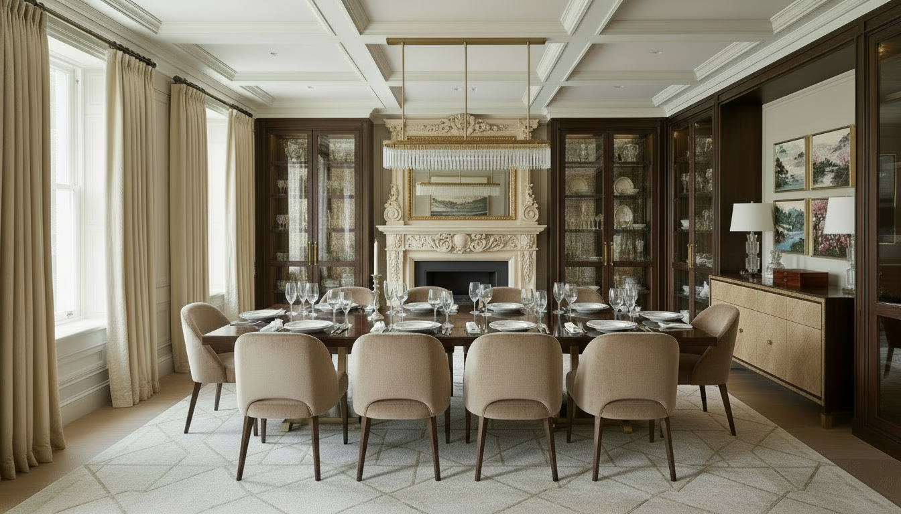

Projektowanie wnętrz premium
Cimer Studio tworzy wnętrza premium oparte na spokojnych proporcjach, wysokiej jakości materiałach i indywidualnie projektowanych meblach.
W projektach skupiam się na funkcji, atmosferze wnętrza, detalach stolarskich oraz naturalnym połączeniu architektury, mebli i wykończeń.
Pomagam przełożyć wizję wnętrza na konkretne rozwiązania — od koncepcji, przez wizualizacje, aż po dokumentację dla wykonawców.
Zobacz również: meble na wymiar Kraków | projektowanie mebli
Powrót do strony głównej